Werte Lebensformen,
der mittigste Hackerspace Deutschlands treibt nun schon seit 10 Jahren durchs All. Das muss mit der ersten
Hackumenta zelebriert werden!
Vom bis zum (ja, das lange Wochenende vom Tag der deutschen Einheit) laden wir ein, mit uns zusammen Vorträge, Workshops, Bastel- / Hacksessions und Party zu gestalten und zu genießen. Lasst uns zusammen Chaos in Kassel machen!
Fahrplan / Call for Entries
Der Fahrplan wartet noch auf Deine Einreichung! Wenn du einen Vortrag, einen Workshop oder eine Performance zu einem technischen, politischen, künstlerischen oder anderweitig interessanten Thema halten möchtest, schreib uns einfach eine E-Mail an 0xA@flipdot.org.
Wir sind offen für alle möglichen Formen und Themen und freuen uns riesig auf deinen Beitrag! Auch musikalische, visuelle oder andere Darbietungen, z.B. tanzbarer Natur, sind sehr willkommen.
Badge
Es wird eine Badge geben! Sie wird mit einem STM32F042F4 und mehr bestückt sein! Weitere Informationen findest du auf:
https://gitlab.com/flipdot/0xA_badge
Drück zum Drehen!
Essen und Schlafen
(Dauer-)Frühstück und ein Abendessen während der Veranstaltung wird für einen geringen Obulus erworben werden können. Natürlich haben wir auch veganes Essen! Auch für erheiterndes Getränk in ausreichender Menge ist gesorgt. Das C3WOC wird uns außerdem mit Waffeln versorgen!
Wenn du noch einen Schlafplatz in Kassel brauchst, schreib uns einfach eine E-mail an 0xA@flipdot.org und wir finden einen Gastgebenden für dich. Ansonsten ist die Jugendherberge Kassel fuß- und leiterläufig erreichbar und empfehlenswert für eine günstige Bleibe.
Veranstaltungsort
Adresse
flipdot e. V.Franz-Ulrich-Straße 18a
34117 Kassel
Deutschland
3. Planet im Sol-System
Orion-Spiralarm der Milchstraße
Virgo Superhaufen
ÖPNV
- Haltestelle Hauptbahnhof Kassel
- (nicht Bahnhof Wilhelmshöhe)
- Straßenbahn:
- RT1, RT4, RT5
-  Bus:
- Linien 10, 16, 17, 32, 37, 52, 100, 500
- Zug:
- RB2, RB5, RB8, RB39, RE9, RE30, RE98
-  Koordinaten:
- 51.318205, 9.484854
Wir bespaßen gemeinsam unsere regulären und dazugemieteten Räume mit mehr als 150m². Wenn die Sterne günstig stehen kann bei gutem Wetter auch der gemütliche Innenhof genutzt werden. Dort kann man bei einer Mate die Trams und Züge schnurren hören, während sie sich reinigen lassen. Fühl dich frei an einem geeigneten Ort deine mitgebrachten Dinge auszubreiten und deine neuesten Projekte mitzubringen, wenn du das Interesse Gleichgesinnter nicht scheust. Falls du mit dem Auto vor Ort länger parken willst, frag vorher nochmal kurz nach, siehe Kommunikation.
Anmeldung
Der Eintritt ist frei! Allerdings wäre es nett, wenn du uns für unsere Ausgaben etwas spendest. Es wird einen empfohlenen Spendenbetrag geben, mit dem wir unsere Kosten decken können.
Es wäre super, wenn du uns im Vorhinein via E-Mail an 0xA@flipdot.org Bescheid sagst, dass du kommen willst. Wir müssen dann die Essens- und Raumplanung nicht komplett aus der Luft greifen.
Helfer gesucht
Wenn ihr helfen wollt (Küche / Bar / Aufräumen), tragt euch doch bitte auf diesem Pad ein.
Kommunikation
Neben E-Mail über 0xA@flipdot.org sind wir meist auch spontan im IRC in #flipdot auf freenode und über Twitter erreichbar.
Bis bald, wir freuen uns schon,
flipdot